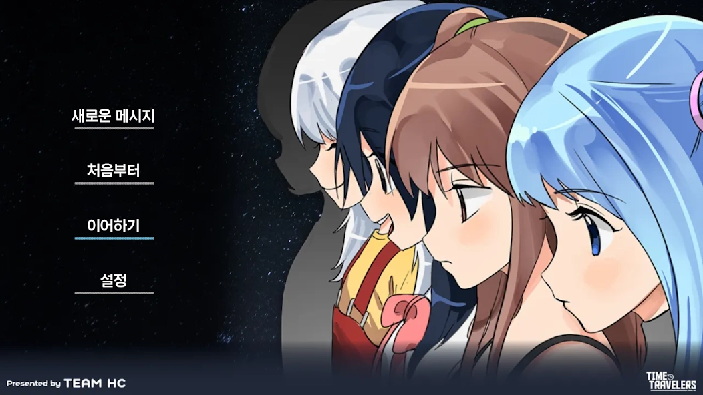
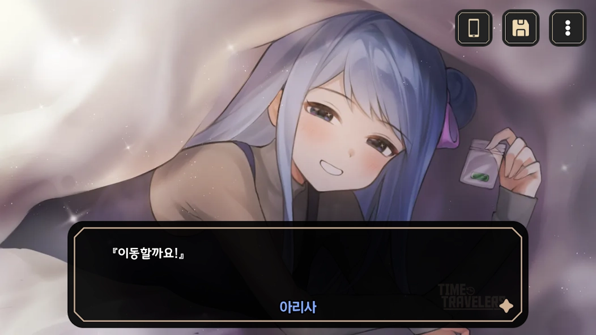
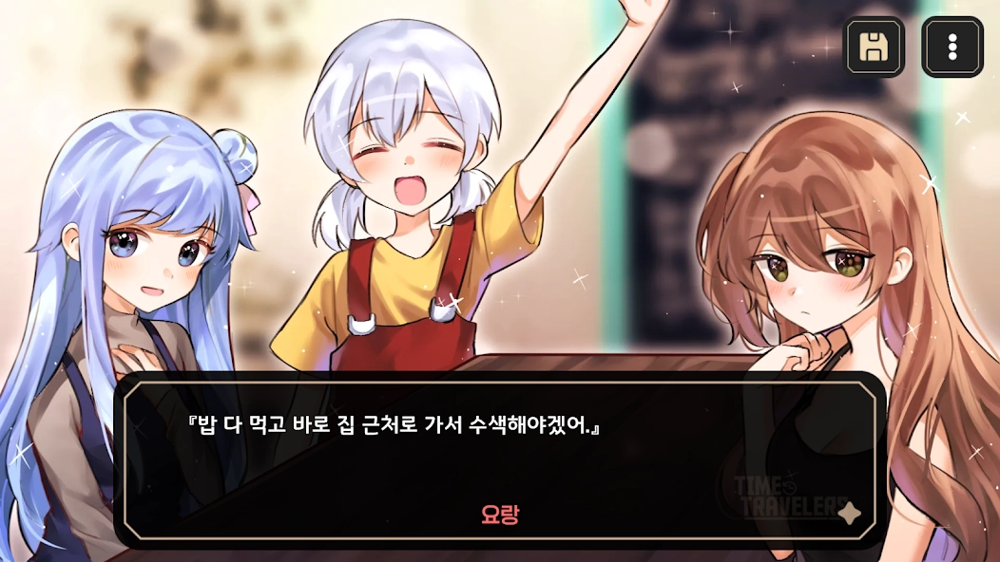
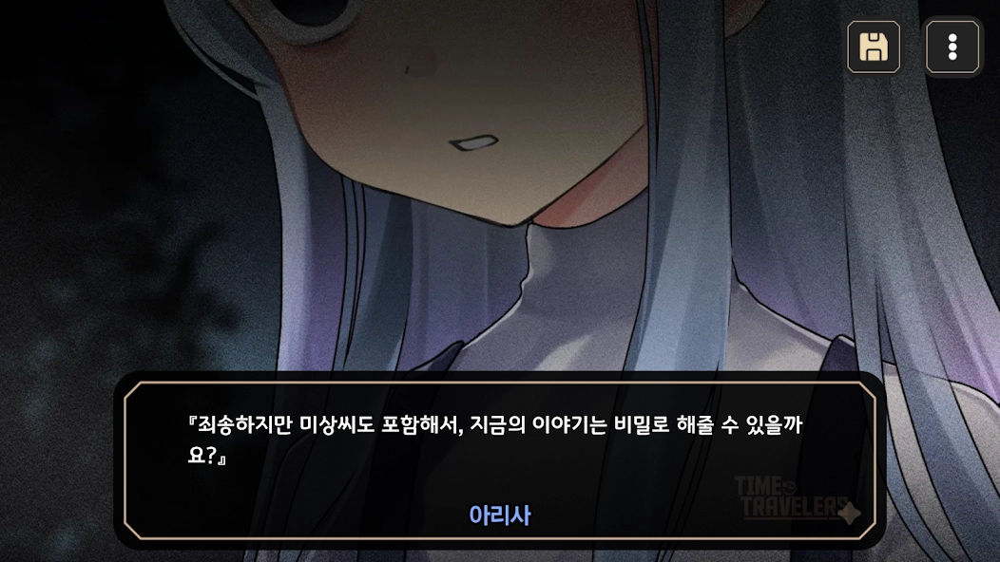

프로젝트 2 · 2017.01.31 발매
기억을 잃은 나, 마주하게 된 소녀들.
소녀들은 비현실적인 목적을 가지고 세계선을 횡단한다.
기억을 잃은 나. 마주하게 된 소녀들. 소녀들은 비현실적인 목적을 가지고 세계선을 횡단한다. 하지만 우리를 방해하는 존재가 등장하고, 나는 사랑하는 소녀의 소원을 들어주기 위해 세계선을 횡단하며 새로운 사실을 알게 되는데—
이바천 시리즈의 대단원, 그리고 새로운 여정이 펼쳐집니다. 기존 Time Travelers의 스토리를 기반으로, 추가적인 내용과 이벤트 CG가 포함되어 조금 더 볼륨감 있는 게임으로 재탄생 했습니다.

『저편 하늘을 향해』를 잇는 이바천 시리즈의 마지막 작품. 모든 기억을 잃어버린 미상, 그리고 하울을 되찾기 위해 떠난 혜울 일행의 이야기를 지금 확인하세요.

추가적인 내용과 이벤트 CG가 포함되어 조금 더 볼륨감 있는 게임으로 재탄생 하였습니다.

고철을 타고 떠나는 혜울 일행의 신비로운 이야기. 지금 바로 그들의 특별한 여정에 동참해보세요.

메시지 기능을 추가하여 등장인물과 단방향 소통이 가능해졌으며, UI도 모바일에서 사용하기 편하게 변경 되었습니다.
게임 개발 과정을 기록합니다.
세계선을 횡단하며 마주하게 될 새로운 사실, 그 끝에 기다리는 진실.
설명 내용이 여기에 들어갑니다.